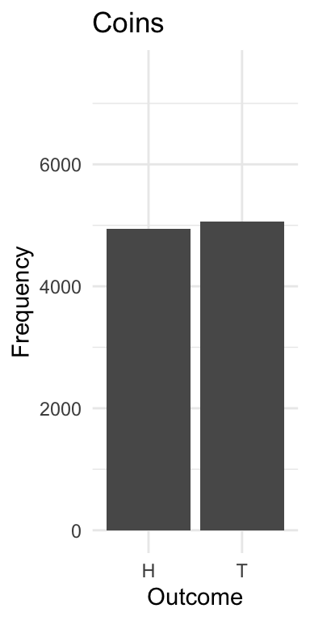

The Logic of Inference
And a Brief Review
2025-09-02
Introduction
- So many techniques
- Parametric, Non Parametric, Semi-Parametric, Frequentist, Bayesian, etc.
- So many assumptions
- Gauss-Markov, IID, Normality, Homoskedasticity, Multicollinearity, Autocorrelation, Distributions, etc.
- So many ways to get it wrong!
- Type I, II, III errors, Overfitting, Underfitting, Omitted Variable Bias, etc.
Political Ideology
- Repeated observation
- Measurement error.
- Political Ideology, repeated measures
- \(y_{i,j}=\lambda_j x_{Ideology,i}+d_j\)
A Spatial Model
- An individual \(i\)’s score on the \(j\)th variable is a linear expression of one’s underlying ideology and error.
- Assume this individual prefers A to B, since A is closer. Trace the expected utility.
Comparisons
- Candidate A: \(-(x_{A}-\theta)^2\)
- Candidate B: \(-(x_{B}-\theta)^2\)
- \[ p(Y=A)=[-(x_{A}-{\theta})^2+e_1] - [-(x_{B}-{\theta})^2+e_2] \] \[
\begin{align}
p(Y=A) &= \theta^2 + x_A x_B - \theta x_A - \theta x_B + e_1 - e_2 \nonumber \\
&= x_A^2 - x_B^2 + 2(x_A - x_B)\theta + e_2 - e_1 \\
&= \alpha + \beta\theta + \epsilon
\end{align}
\]
Comparisons
- The quadratic utility model reduces to a linear probability model, or a logit model. \[
\begin{align}
p(Y=A) &= \theta^2 + x_A x_B - \theta x_A - \theta x_B + e_1 - e_2 \nonumber \\
&= x_A^2 - x_B^2 + 2(x_A - x_B)\theta + e_2 - e_1 \\
&= \alpha + \beta\theta + \epsilon
\end{align}
\]
The Directed Acyclic Graph
- Suppose we wanted to find the joint probability of these five variables; for convenience, \(p(A, B, C, D, E)\)
- Knowing nothing else, \(5^5=3125\) possible combinations.
- But, if we know the causal structure, we can reduce the number of combinations.
The DAG
\[P(A,B,C,D,E) = P(A) \times P(B|A) \times P(C|B) \times P(D|C) \times P(E|D)\]
The DAG
- A more complicated example, where \(A\) causes both \(B\) and \(C\), which both cause \(D\), which causes \(E\).
\[P(A,B,C,D,E) = P(A) \times P(B|A) \times P(C|A,B) \times P(D|C) \times P(E|D)\]
Probabilities
- The joint probability is the product of the conditional probabilities.
- The marginal probability is the sum of the joint probabilities over all other variables. \[p(x)=\sum_y p(x_i, y_i) \hspace{0.5in} \texttt{Marginal Probability}\] \[
p(E) = \sum_A \sum_B \sum_C \sum_D p(E|D)p(D|C)p(A)
\] \[p(x)=\int p(x, y) dy \hspace{0.5in} \texttt{Marginal Probability}\] \[p(x|y)=p(x,y)/p(y)\hspace{0.5in} \texttt{Conditional Probability}\]
Independence
- Because there is no connected path from \(z\) to \(y\), \(z\) is independent of \(y\) given \(x\). \[z \perp y \mid x\]
Independence
- \(u\) is a fork - It has an effect on two variables, \(x\) and \(y\)
- This creates confounding
Conditional Independence: \(x \not\perp y\)
\(x \perp y \mid u\)
An Old, Persistent Critique
\[smoking \perp cancer \mid gene \]
D-Connection and Separation
Negative Advertising
- Advertising and Turnout (Lau and Pomper 2004; Ansolabahere, Iyengar and Simon 1999)
Inference
- The Frequentist and Bayesian traditions.
- The Frequentist tradition of probability: Jerzy Neyman, Karl Pearson and Ronald Fisher, among others.
- Probability refers to the frequency of an event occurring in many repeated trials.
- Frequentism is actually quite intuitive when applied to circumstances in which we can observe repeated trials.
- Rolling die: 1/6 of those trials will yield a 1.
- We can calculate multiple events: Each trial involves rolling two dice, should we bet that at least one of these will yield two 1s?
- The probability of observing two ones is 1/6 \(\times\) 1/6 \(=\) 1/36. This implies that the rest of the sample space (i.e., not rolling two ones) is 35/36. Since the rolls are independent, then the probability that two ones are not observed in 10 trials is \((35/36)^{10}=0.75\) – thus one should probably not bet on “snake eyes.”
Inference
[1] "After flipping a coin 10000 times 4943 were heads! "

Writing a Function
library(ggplot2)
simulate_coin_toss <- function(n_draws, prob_heads) {
# Set seed for reproducibility
set.seed(123)
# Catch Errors
if (prob_heads < 0 || prob_heads > 1) {
stop("Probability of heads must be between 0 and 1.")
}
# Calculate probability of tails
prob_tails <- 1 - prob_heads
# Simulate draws
outcomes <- sample(c("H", "T"),
size = n_draws,
replace = TRUE,
prob = c(prob_heads, prob_tails))
# Create a data frame for plotting
df <- data.frame(Outcome = outcomes)
plot = ggplot(df, aes(x = Outcome)) +
geom_bar() +
labs(title = "Coin Simulation", x = "Outcome", y = "Frequency") +
theme_minimal() +
scale_y_continuous(limits = c(0, n_draws))
return(plot)
}
Simulating A Coin
simulate_coin_toss(n_draws = 100, prob_heads = 0.25)
Repeated Trials
- The Frequentist tradition views probability as an outcome observed “in the long run.”
- What does this mean vis-à-vis the central limit theorem, the standard error, confidence intervals, p-values, and Type I and Type II errors?
- The Bayesian tradition views probability in a more subjective sense.
- Conditional Probability: \(p(A|B)\) is the probability of event A occurring given that event B has occurred. \[p(A|B) = \frac{p(B|A) \times p(A)}{p(B)}\]
- \(p(A)\) is the prior probability of event A occurring.
- \(p(B|A)\) is the likelihood of observing event B given that A has occurred.
- \(p(B)\) is the marginal probability of event B occurring.
- The derivation…
The Monty Hall Experiment
Backround: The Monty Hall Experiment comes from the classic game show, “Let’s Make a Deal.” Here’s how it goes. There are three doors. Behind one door is a substantial prize – a car – behind the others are goats (undesirable prizes).
The contestant chooses one of three doors, but doesn’t open it. The door is announced. The host then chooses a door – obviously not the one with a car – opens it, and reveals a goat. The contestant offers the option of staying with their original choice, or switching doors.
Should the contestant stick with the original choice or switch to the unopened door?
The Monty Hall Experiment
- \[ P(Car(A)) = P(Car(B)) = P(Car(C))=1/3\]
- The contestant’s initial choice is entirely arbitrary, as the car is equally likely to be behind any door.
- Let’s say the contestant chooses door A.
- Monty Hall then opens Door B, revealing a goat.
- The contestant now may stay with door A, or switch to C.
- What would you do?
- And more importantly, why?
The Monty Hall Experiment
- From Monty’s Perspective: (1) He will never choose the door with the car, and (2) he will never choose the door the contestant initially picked. \[ P(Open(B) | Car(A)) = 1/2\] \[ P(Open(B) | Car(B)) = 0\] \[ P(Open(B) | Car(C)) = 1\]
- Let’s use Bayes Rule to calculate the probability that the car is behind doors A or C, given that Monty opened door B. \[p(Car(A)|Open(B))?\] \[p(Car(B)|Open(B))?\] \[p(Car(C)|Open(B))?\]
The Monty Hall Experiment
- These are all inversions of the conditional probabilities we already know, and we can use Bayes Rule to solve. \[p(Car(A)|Open(B)) = {{(1/3 * 1/2)}\over{(1/3*1/2)+ (1/3*0) + (1/3*1)}} = 1/3\] \[p(Car(B)|Open(B)) = {{(1/3 * 0)}\over{(1/3*1/2)+ (1/3*0) + (1/3*1)}} = 0\] \[p(Car(C)|Open(B)) = {{(1/3 * 1)}\over{(1/3*1/2)+ (1/3*0) + (1/3*1)}} = 2/3\]
- The contestant should switch to door C, as the probability of winning the car is 2/3, versus 1/3 if they stick with door A.
Simulating the Monty Hall Experiment
The Number of Trials: 10000
If the player switches doors, they win: 0.6681 of the time
If the player stays with original choice, they win: 0.3319 of the time
Two Traditions
- The Frequentist tradition views probability as an outcome observed “in the long run.”
- The Bayesian tradition views probability in a more subjective sense. \[p(M|D) ={p(D|M) p(M)\over p(D)}\] \[p(M|D) \propto p(D|M) p(M)\]
- \(p(M|D)\) is the posterior probability of model \(M\) given data \(D\).
- \(p(D|M)\) is the likelihood of observing data \(D\) given model \(M\).
- \(p(M)\) is the prior probability of model \(M\).
Bernoulli Trials
- Suppose we have a coin, and we want to know the probability of heads, \(\theta\), where \(y \in [0 , 1]\)
- Viewing this from the Frequentist perspective, we can flip the coin \(n\) times, and observe \(y\) heads.
- The parameter \(\theta\) is fixed but unknown, but we can estimate it as \(\widehat{\theta} = y/n\).
- This estimate is the maximum likelihood estimate (MLE) of \(\theta\).
- The joint probability of observing (H, H) in two trials is \(0.5 \times 0.5 = 0.25\).
- Assume \(\theta = 0.3\), then the joint probabilty of (H,H is \(0.3 \times 0.3 = 0.09\)). \[p(H,H)=\theta^y(1-\theta)^{1-y}\]
- And across, \(n\) indepedendent (Bernoulli) trials \[p(k)=\prod\theta^y_i(1-\theta)^{1-y_i}\] \[=\theta^k(1-\theta)^{n-k}\]
- The Binomial Density \[p(K | \theta, N)= {n \choose k} \theta^K(1-\theta)^{N-K}\]
When \(\theta\) is Unknown
- Given the data available, what is the most likely parameter or set of parameters to generate the data?
- The principle of maximum likelihood estimation (MLE) is to find the parameter values that maximize the likelihood of observing the data, given a particular parameter or set of parameters’ value(s).
- The likelihood function is the joint probability of observing the data, given the parameters.
- Assume we observe 7 heads, 3 tails. What’s our best guess of theta?
Bernoulli Trials
library(ggplot2)
theta <- seq(0, 1, by = 0.01)
# The likelihood function, using bernoulli trials
likelihood <- theta^7 * (1 - theta)^3
df <- data.frame(theta, likelihood)
max_likelihood_theta <- df$theta[which.max(df$likelihood)]
ggplot(df, aes(x = theta, y = likelihood)) +
geom_line() +
geom_vline(xintercept = max_likelihood_theta, color = "red", linetype = "dashed") +
labs(title = "Likelihood Function for 7 Heads and 3 Tails",
x = "Theta (Probability of Heads)",
y = "Likelihood") +
theme_minimal()
cat("Possible values of theta:", paste(head(theta), collapse = ", "), "...\n")
cat("Assume we observe 7 heads, 3 tails. What's our best guess?\n\n")
cat("The maximum value of the distribution is at theta =", max_likelihood_theta, "\n")
Bernoulli Trials
Possible values of theta: 0, 0.01, 0.02, 0.03, 0.04, 0.05 ...
Assume we observe 7 heads, 3 tails. What's our best guess?
The maximum value of the distribution is at theta = 0.7
A Quick Review
- Correlated random variables. Assume we observe two variables, \(x\) and \(y\). They have means \(\mu_x\) and \(\mu_y\) and standard deviations, \(\sigma_x\) and \(\sigma_y\). The mean of \(x+y\) is \(\mu_x+\mu_y\).
- The standard deviation is \(\sqrt{\sigma^2_x+\sigma^2_y+\rho\sigma_x\sigma_x}\)
- Multivariate normal distribution, \(z_k \sim N(\mu_k, \Sigma_{kk})\). \(\mu_k\)
library(MASS)
library(dplyr)
library(ggplot2)
# A covariance matrix (correlation because var = 1)
cov = matrix(c(1, 0.25, 0.25, 1), 2, 2)
## Simulate 1000 draws and plot
x <- mvrnorm(1000, mu = c(0, 0), Sigma = cov) %>% data.frame()
head(x)
colnames(x) <- c("X1", "X2") # Rename columns for clarity
ggplot(x, aes(x = X1, y = X2)) +
geom_point() +
labs(title = "Scatter Plot of Bivariate Normal Data, rho = 0.25",
x = "Variable X1",
y = "Variable X2") +
theme_minimal()
paste0("The estimated correlation is " , round(cor(x)[2,1], 3))
A Quick Review
X1 X2
1 0.9658946 0.08199969
2 1.4894525 0.69235941
3 0.4244329 0.49882277
4 0.4459264 -0.49196931
5 -0.4380806 0.20868850
6 1.4560852 0.61328398
[1] "The estimated correlation is 0.257"
A Quick Review
- The Population and the Sample.
- The Expected Value. The expected value is the average value over many draws – it’s useful to think of it from the perspective of frequentism. For a discrete distribution, then:
\[E(x_i)=\sum_{i}^{K} x_i \times p(x_i)\]
- Continuous distributions \[E(x)=\int_{-\infty}^{\infty}x f(x)dx\].
A Quick Review
A CDF is written as F(x), or capital greek notation, e.g., \(\Gamma(x)\).
A PDF is written in lower case font, f(x), and we can find any area under a PDF by summation (for categorical data), and integration (for continuous data). That is, \[p(a<x<b)=\sum_i^{K} x_i\] \[p(a<x<b)=\int f(x) dx\]
And, \(F(\infty)=1\), and \(F(-\infty)=0\), and \(p(-\infty < x < \infty)=\int_{-\infty}^{\infty}f(x)dx=1\).
Estimator Properties
- If we were able to repeatedly draw samples and run our estimation procedure, we are left with a . \[E(\hat {\theta})\] \[var(\hat{\theta})=E(\hat{\theta}-E(\hat{\theta}))^2\]
- Bias is the difference between the expected value of an estimator relative to the true population parameter, i.e., \(\hat{\theta}-\theta\). Note how this is different from the sampling error. The sampling error refers to the difference for a single estimate produced from our estimator. Bias is the average of many samples analyzed with an estimator.
- The Mean Squared Error (MSE), or \(E(\hat{\theta}-\theta)^2\).
\[E(\hat{\theta}-E(\hat{\theta}))^2 +[E(\hat{\theta}-\theta)]^2\]
Finite Sample Properties
- Ordinary Least Squares has desirable small sample properties. What does this mean? Some estimators are unbiased or have minimal variance even when a sample is small. \[MSE(\hat{\theta})=E(\hat{\theta}-\theta)^2\]
- The Bias Variance Tradeoff. \(Y_i=\beta_0+\beta_1 x_{1,i}+\beta_2 x_{2,i}+\dots+\beta_k x_{k,i}+e_i\)
Asymptotic Properties
We can also explore the properties of an estimator by varying the sample size; in particular, what happens to the estimator as the sample size approaches infinity?
As the sample size gets larger and larger, what happens to the characteristics of an estimator?
An estimator is asymptotically unbiased if
\[\lim_{n\to\infty} E(\hat{\theta})=\theta\] - An estimator is consistent if
\[P\lim_{n\to\infty}(|\hat{\theta}-\theta|<d)=1\] \[Plim_{n\to\infty}(\hat{\theta})=\theta\]